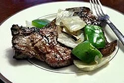

Northwest Steakhouse Steak Marinade!

Ingredients
- 1 pinch seasoned salt
- 1 pinch garlic powder
- 1 teaspoon Greek seasoning
- 1 cube chicken bouillon, crushed
- ½ cup butter, melted
Steps
- Stir the seasoning salt, garlic powder, Greek seasoning, and bouillon cube into the melted butter.
- Mix until the bouillon cube dissolves. Pour the marinade into a wide and shallow dish and place a steak of your choice into the marinade, turning to coat both sides.
- Cook or grill as desired.